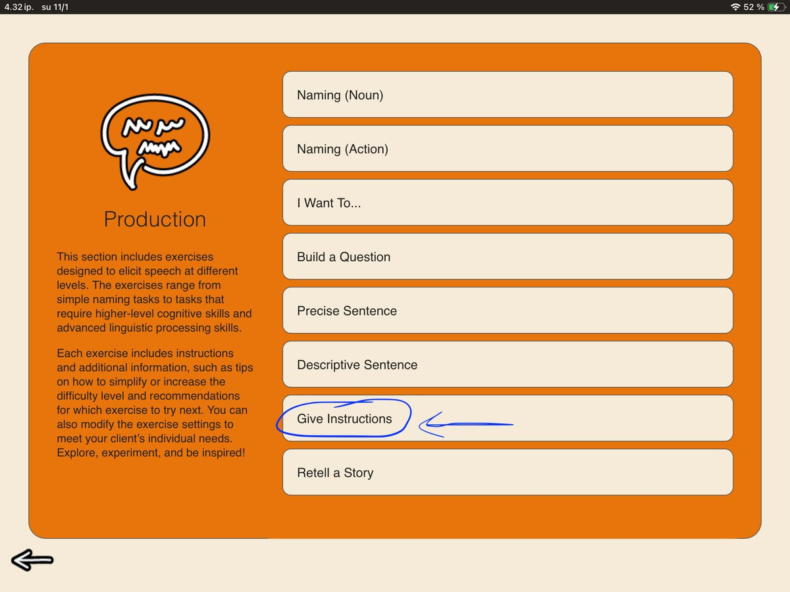
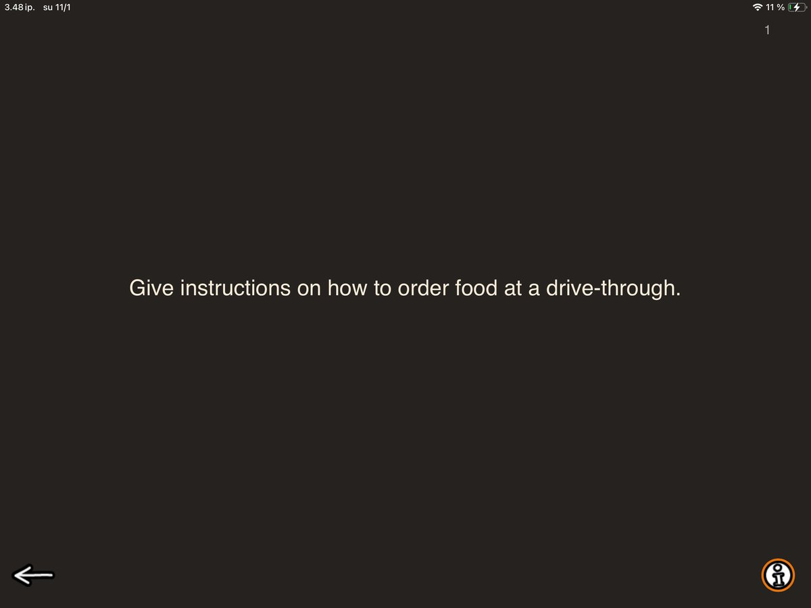
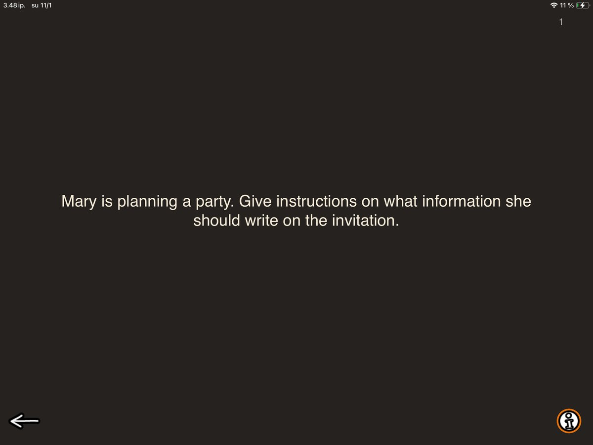

Next up in the Speech Production category is Give Instructions. This exercise targets sequential planning and narration, with the goal of formulating clear, logical instructions for everyday situations. And as this is SanapsisPro, we are weaving in some larger goals too. This time it is asking the client to consider the listener’s perspective to figure out what they need to be able to perform the task successfully. What do they need to know to be able to perform the task on their own?

Describing and walking someone through a familiar action is a great tool in speech therapy. In SanapsisPro, the task has two levels:
Level 1: Step by step

Level 1 focuses on concrete, straightforward tasks. Here you ask the client to describe the action shown on the screen step by step. The instructions should be detailed and clear enough that an unfamiliar listener could understand what the action is and how it is completed.
Seems simple, right? Simple, maybe. Easy, no. Familiar activities can be surprisingly tricky to explain!
You can support the client by breaking the task into smaller parts: What is the first step? What comes next? Is there anything else to consider before the task is complete?
The goal is to break down the process from approaching the ordering point and choosing food to placing the order, paying, and collecting it. All this without falling into the trap of assuming the listener already knows what we mean. And as clinicians, we know that this trap is deceptively easy to fall into when words are hard to find or sentence formulation is effortful.
Level 2: A little problem-solving

Level 2 introduces a problem-solving component to the task. In addition to walking the listener through a straightforward action sequence, these tasks require the client to make judgment calls, consider safety, make decisions, or respond to unexpected circumstances.
Here, the client needs to consider what the guests need to know. The date, time, and location are essential. Should the invitation include an address, instructions for responding, or information about what to bring? What details are needed for this particular party?
The focus expands from explaining a sequence to considering the situation and selecting relevant information. Taking the listener’s perspective becomes especially useful: If you received this invitation, would you have enough information to attend?
You can continue the task format with tasks tailored to the client’s daily life. Start with familiar, concrete topics: Tell me how you prepare your favorite breakfast. You can also introduce problem-solving into everyday activities. If the client describes taking the bus to the library, follow up with: What do you do if the bus does not arrive as scheduled?
Give Instructions is a sister task to Organize Instructions in our Reading category, where you organize sentences on the same topics as in this task. It can be a great starting point to get an idea of what giving instructions looks like before moving on to creating the instructions yourself.
So, to round things off, here are some instructions for you:
- Take out your iPad.
- Tap on the SanapsisPro icon.
- Tap Production.
- Tap Give Instructions.
- Swipe to read through the tasks on Level 1.
- Discover how useful these tasks can be with many of your clients.
- Tap the info button.
- Tap Level 2.
- Swipe and be surprised by how versatile the tasks can be.
- Be inspired to build the next session with a client you’ve been finding it tricky to plan for around this task.
- Pick up your phone.
- Call or text a colleague to share the great idea! 😉